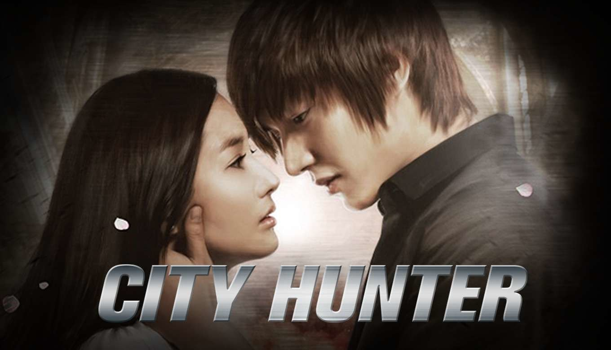

My Favorite Movies
| What's Wrong With Secretary Kim Lee Young-Joon's family runs a large company and he works as the vice-president of the company. He is smart, rich and handsome, but he is arrogant. His secretary is Kim Mi-So. She has worked for him for years and she is perfect for him, but Kim Mi-So decides to quit her job. |
|
 |
Healer im Moon-Ho (Yoo Ji-Tae) is a popular reporter at major broadcasting company. One day, he learns the truth of a case that took place in the past. He intentionally approaches people who are related to the case and helps them. While doing so, he agonizes over the truth and beliefs. Meanwhile, with the help of Kim Moon-Ho, internet reporter Chae Young-Shin (Park Min-Young) and Seo Jung-Hoo (Ji Chang-Wook), known as "Healer," grow into real reporters. |
|  | City Hunter Lee Yoon-Sung (Lee Min-Ho) works at the Blue House for the National Communication Network Team. He graduated from M.I.T. in the U.S. and possesses elite skills as an I.T. engineer. At the Blue House, Yoon-Sung meets Kim Na-Na (Park Min-Young), who works as a bodyguard there. The two people fall for each other even though Yoon-Sung was warned not to fall in love. An elaborate plan for revenge is his ultimate mission .... |
About This Page
It has been coded during the Fullstack Program @ Le Wagon!